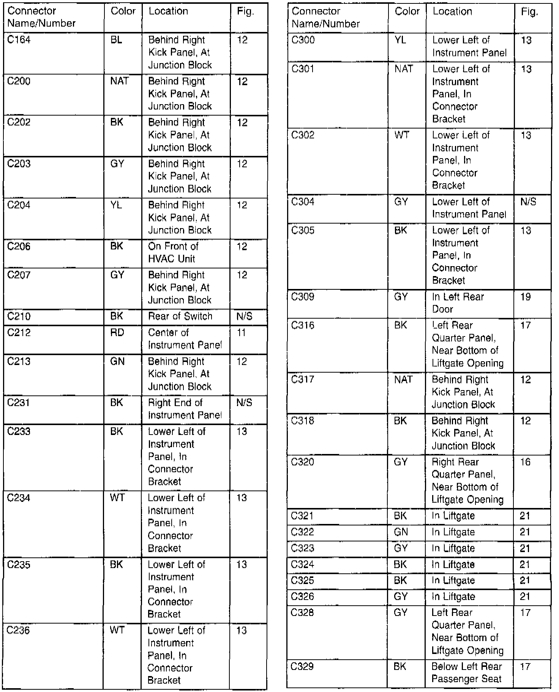

Operation CHARM
: Car repair manuals for everyone.
Русский
Home
>>
Jeep
>>
1997
>>
Grand Cherokee 4WD L6-4.0L VIN S
>>
Repair and Diagnosis
>>
Diagrams
>>
Connectors
>>
Connector & Ground Locations Index
>>
Part 2 of 8
Part 2 of 8
Connector Locations Index (Part 2 Of 8):
